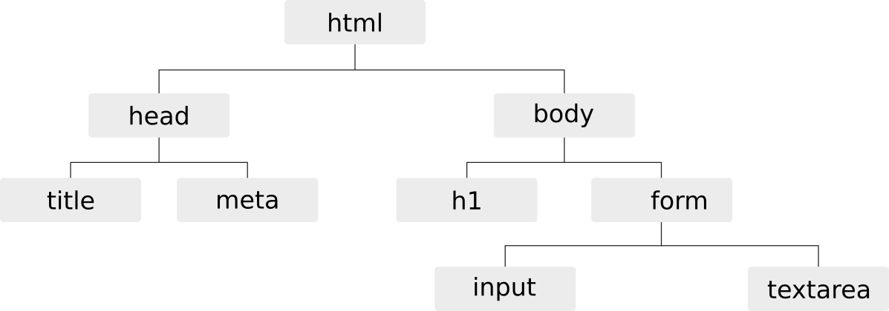
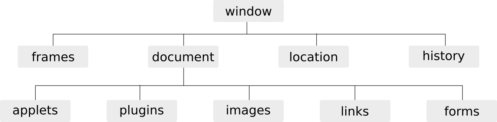

<button onclick="alert('pop-up');">pop-up</button>
onclick<script> dans <head> ou avant </body><button onclick="alert('pop-up-inline');">inline</button>
<button id="button-body">body</button>
<script>
document.getElementById('button-body').onclick=function(){alert('pop-up-body');}
</script>
.js
<script> dans <head> ou avant </body><head>
<script src="inc/js/js-file.js"></script>
</head>
<body>
<button id="button-file">file</button>
</body>
Dans l'idéal JS doit être utilisé pour améliorer l'expérience utilisateur. Il faut éviter de l'utiliser pour ajouter de nouvelles fonctionnalités.
;// commentaire/* commentaire */Type de données :
Pour les valeurs booléennes :
cast possible avec la fonction Boolean()
<script>
console.log(true)
console.log(false)
console.log(Boolean())
console.log(Boolean(1))
console.log(typeof true)
</script>
Pour les valeurs numériques : entiers, réels
cast possible avec la fonction Number()
<script>
console.log(12e3)
console.log(4.5)
console.log(Number())
console.log(Number(true))
console.log(Number(false))
console.log(Number("test"))
</script>
isNaN(val) : pour tester si val est NaN (Not a Number)parseInt(string) : pour convertir une chaîne en entierparseFloat(string) : pour convertir une chaîne en réel<script>
console.log(parseInt("3.4a"))
console.log(parseFloat("3.4a"))
console.log(parseInt("a3.4"))
console.log(isNaN(parseFloat("a3.4")))
</script>
Pour les chaînes de caractères délimitées par ' ou "
cast possible avec la fonction String()
<script>
console.log("C'est super")
console.log('C\'est super')
console.log(String(2))
console.log('concat'+"énation")
</script>
length: Longueur d'une chaîne de caractères<script>
console.log("C'est super".length)
</script>
charAt(int n) : renvoie du n ème caractèresubstring(int i, [int j]) : renvoie de la chaîne compris entre le i ème et le j ème caractère
j n'est pas donné, renvoie la chaîne à partir du caractère itoUpperCase() : conversion en MAJUSCULEStoLowerCase() : conversion en minusculesindexOf(string souschaine, [int pos]) : renvoie l’indice de la 1ère occurence de souschaine dans la chaînelastIndexOf(string souschaine, [int pos]) : renvoie l’indice de la dernière occurrence de souschaine dans la chaîne. L’option pos permet de n’effectuer la recherche :
indexOflastIndexOf
Si souschaine n'est pas trouvée, indexOf et lastIndexOf renvoient -1
<script>
console.log("C'est super".charAt(0))
console.log("C'est super".substring(2,5))
console.log("C'est super".substring(6))
console.log("C'est super".toUpperCase())
console.log("C'est super".toLowerCase())
console.log("C'est super".indexOf("super"))
console.log("C'est super".indexOf("super", 7))
console.log("C'est super".lastIndexOf("e"))
</script>
var variable=valeur;<script>
var variable = 2;
variable += 4;
console.log(variable);
variable = "entier"
variable += 4;
console.log(variable);
</script>
Type d'objet :
Object correpond à l'objet générique en javascript.
| Programmation fonctionnelle | Programmation objet |
|---|---|
| variable | propriété |
| fonction | méthode |
La gestion des dates se fait avec l'objet Date
new Date() définit la date courantenew Date(chaine) converti la chaînenew Date(année, [indexMois[, jour[, heures[, minutes[, secondes[, millisecondes]]]]]])<script>
console.log(new Date());
console.log(new Date('1970-01-01 13:37:00.000'));
console.log(new Date(1970, 0, 1, 13, 37, 00, 0));
</script>
<script>
var date=new Date();
console.log(date.getFullYear());
console.log(date.getYear());
console.log(date.getMonth());
console.log(date.getDate());
console.log(date.getDay());
console.log(date.getHours());
console.log(date.getMinutes());
console.log(date.getSeconds());
console.log(date.getMilliseconds());
console.log(date.getTime());
</script>
Les tableaux sont créés à partir de l'objet Array. Il est
possible de donner le nombre d'éléments à la création du
tableau. Ils peuvent contenir des éléments de types différents.
new Array(arrayLength)new Array(element0, element1[, ...[, elementN]])<script>
console.log(new Array(10));
console.log(new Array());
console.log([]);
var t = [1,"2",3.4,'c'];
console.log(t);
t[5]=6;
console.log(t);
</script>
Tableaux associatifs Tableaux multi-dimensionnels tableaux de types différents
length: nombre de cases dans le tableau.<script>
var t = ["premier","dernier"];
console.log(t[0])
console.log(t[t.length-1])
</script>
Mutateurs: modifient le tableau
push(elt) : ajoute à la fin du tableau l'élément eltunshift(elt) : ajoute au début du tableau l'élément eltpop() : supprime et retourne le dernier élément du tableaushift() : supprime et retourne le premier élément du tableausplice(int pos, int nb) : supprime et retourne nb éléments à partir de l'index posreverse(): renverse l'ordre des éléments du tableausort(): trie les éléments du tableauAccesseurs: ne modifient pas le tableau
indexOf(elt) : retourne l'index de l'élément elt dans le tableau ou -1lastIndexOf(elt) : retourne le dernier index de l'élément elt dans le tableau ou -1join([string s]): concatène tous les éléments du tableau en une chaîne de caractères séparés par sslice([int debut, [int fin]]): extrait une portion du tableau de l'index debut à l'index fin<script>
var t = [2,3,4];
t.unshift(1); t.push(5);
console.log(t);
t.pop(); t.shift();
console.log(t);
t.reverse(); console.log(t);
t.sort(); console.log(t);
console.log(t.indexOf(2));
console.log(t.join());
console.log(t.join('|-|'));
console.log(t.slice());
console.log(t.slice(0,1));
</script>
Les propriétés et méthodes de l'objet Math sont statiques.
abs(x), acos(x), asin(x), atan(x), cos(x), exp(x), log(x), sin(x), sqrt(x), tan(x) : applique la fonction appropriée à xround(x) : renvoie l'arrondi d'un nombreceil(x) : renvoie le plus petit entier supérieur ou égal à xfloor(x) : renvoie le plus grand entier inférieur ou égal à xmax(x,y) : renvoie la plus grande des valeurs de x et ymin(x,y) : renvoie la plus petite des valeurs de x et ypow(x,y) : renvoie x à la puissance yrandom() : retourne un nombre pseudo-aléatoire compris entre 0 (inclus) et 1 (exclu)<script>
pi = Math.PI;
console.log(pi);
console.log(Math.round(pi));
console.log(Math.round(pi+0.5));
console.log(Math.ceil(pi));
console.log(Math.floor(pi));
console.log(Math.min(pi, 4.2));
console.log(Math.max(pi, 4.2));
console.log(Math.pow(3, 2));
console.log(Math.random());
</script>
null est une valeur qui ne correspond à aucune valeurundefined correspond à une variable qui est définie mais qui n'a pas été initialiséenull et undefined correspondent à la valeur booléenne false<script>
console.log(typeof null)
console.log(typeof undefined)
</script>
+ addition- soustraction* multiplication/ division% modulo (reste de la division euclidienne)** exponentielle (ES6)-- décrément++ incrémenta == b : égalité des valeursa != b : différencea <= b : infériorité ou égalitéa >= b : supériorité ou égalitéa < b : inférioritéa > b : supérioritéa === b : identité (égalité des valeurs et des types)a !== b : non identité (différence des valeurs ou des types)<script>
console.log(null == undefined)
console.log(null === undefined)
</script>
if (condition) {
instructions; // si condition est évaluée à true
}
if (condition) {
instructions; // si condition est évaluée à true
} else {
instructions; // si condition est évaluée à false
}
if (condition1) {
instructions; // si condition1 est évaluée à true
} else if (condition2) {
instructions; // si condition1 évaluée à false et condition2 évaluée à true
} else {
instructions; // si condition1 et condition2 évaluées à false
}
<script>
var valeur = Math.random();
if (valeur < 0.33) {
valeur = "petite"
} else if (valeur < 0.66) {
valeur = "moyenne"
} else {
valeur = "grande"
}
console.log(valeur)
</script>
switch(expression) {
case x:
// si expression == x
break;
case y:
// si expression == y
break;
default:
// si expression != x et expression != y
}
<script>
var date = new Date(), day;
switch (date.getDay()) {
case 6: // samedi
case 0: // dimanche
day = "week-end";
break;
case 1: // lundi
case 2: // mardi
case 3: // mercredi
case 4: // jeudi
case 5: // vendredi
day = "semaine";
}
console.log(day);
</script>
for (expr1; expr2; expr3) { // expr1 est exécutée une seule fois au début de la boucle
instructions; // exécuté tant que expr2 est évaluée à true
} // expr3 est exécutée à la fin de chaque itération
while (condition) {
instructions; // exécutée si condition vaut true et répétée tant que condition vaut true
}
do {
instructions; // exécutée puis répétée tant que condition vaut true
}
while (condition);
<script>
var i = 0, tab = [1,2,3,4];
do {
tab[i] = tab[i]%2;
i++;
} while (i < tab.length);
for (i = 0; i < tab.length; i++) {
console.log(tab[i]);
}
</script>
<script>
function helloWorld() {
console.log("Hello world!");
}
helloWorld();
</script>
<script>
function helloWorld(hello, world) {
console.log(hello + ' ' + world);
}
helloWorld('Hello', 'world');
helloWorld('Bonjour', 'tous');
</script>
<script>
function helloWorld(hello, world = 'world') {
console.log(hello + ' ' + world);
}
helloWorld('Bonjour', 'tous');
helloWorld('Hello');
</script>
return est absent, null est retourné<script>
function helloWorld() {
return "Hello world!";
}
console.log(helloWorld());
</script>
click : gestion du clic souris sur un élémenton dans l'attribut d'une balisethis représente la balise associé à l'événement<button onclick="console.log('button')" value="button1">button</button>
<button onclick="console.log(this.value)" value="button2">button</button>
<div onclick="console.log('div')">div</div>
load : la ressource (page, img, link, iframe, script) est chargée par le navigateurunload : l'utilisateur quitte la pagekeydown, keypress, keyup : gestion du claviermousedown, mouseover, mouseup, mouseleave, mouseenter, mousemove : gestion de la sourisfocus : un élément reçoit le focusblur : un élément perd le focuschange : la valeur d'un champ de formulaire est modifiéereset : quand les champs du formulaire sont réinitialiséssubmit : quand le formulaire est soumisle code html peut être représenté sous forme arborescente

Javascript représente la page, l'onglet grâce à l'objet global window

frames[] : tableau de frameslocation : url de la page courantehistory : historique de navigation de l'onglet courantself : fenêtre couranteopener : la fenêtre (si elle existe) qui a ouvert la fenêtre couranteparent : parent de la fenêtre courante, si la fenêtre courante est une sous-partie d’un framesettop : fenêtre principale (qui a crée toutes les fenêtres)name : nom de la fenêtrealert(string) : ouvre une boîte de dialogue avec le message passé en paramètreprompt(string) : affiche une fenêtre de saisieconfirm(string) : ouvre une boîte de dialogue avec les boutons OK et cancelblur() : enlève le focus de la fenêtrefocus() : donne le focus à la fenêtrescroll(int x, int y) : positionnement aux coordonnées (x,y)close() : ferme la fenêtre
open(URL, string name, string options) : ouvre une nouvelle fenêtre contenant le document identifié par l'URL
URL : adresse de la page à chargernom : nom de la fenêtre (utilisable par TARGET)options (séparées par des , ) :
toolbar = [yes|no] : affichage de la barre d’outilslocation = [yes|no] : affichage de l’URL de la pagedirectories = [yes|no] : affichage de la barre le lienstatus = [yes|no] : affichage de la barre d’étatmenubar = [yes|no] : affichage de la barre de menusscrollbars = [yes|no|auto] : affichage des ascenseursresizable = [yes|no] : fenêtre redimensionnable ou nonwidth = pixels, height = pixels : largeur et hauteur en pixelstop = pixels, left = pixels : positionnement vertical et horizontalfullscreen = [yes|no] : affichage plein écran
Il n'est pas obligatoire de préfixer par window
<script>
window.alert('alert');
console.log(window.prompt('prompt'));
console.log(window.confirm('confirm'));
// alert('alert');
// console.log(prompt('prompt'));
// console.log(confirm('confirm'));
</script>
<script>
var target = open('https://duck.com', 'target', 'resizable=yes,width=420px,height=420px');
// target.close();
</script>
title : titre du documentlocation : URL du documentlastModified : date de dernière modificationreferrer : URL de la page d’où arrive l'utilisateurforms[] : tableaux des formulaires de la pagelinks[] : tableaux des liens de la pageimages[] : tableaux des imagesapplets[] : tableaux des appletsplugins[] : tableaux plug-insgetElementById(string) : retourne la balise à partir d'un identifiantquerySelector(string) : retourne la première balise qui correspond à une sélection CSSquerySelectorAll(string) : retourne toutes les balises qui correspondent à une sélection CSSwrite(string) : écrit une chaîne dans le documentwriteln(string) : écrit une chaîne dans le document + caractère de fin de ligne<input type="text" id="input">
<button onclick="document.getElementById('input').value = 'value';">button</button>
<button onclick="document.write('write')">write</button>
Le document représente la page sous forme arborescente. Chaque nœud est caractérisé par:
nodeName : le nom (par exemple #text, div, span)nodeType : valeur numérique souvent à comparer avec les constantes
Node.ELEMENT_NODENode.ATTRIBUTE_NODENode.TEXT_NODEnodeValue : valeur associée au nœud (pour les formulaires)Pour se déplacer dans l'arbre DOM, il existe:
parentNode : le nœud pèrechildnodes[] : les nœuds fils du nœud courantfirstChild : le premier nœud filslastChild : le dernier nœudpreviousSibling : le nœud frère précèdentnextSibling : le nœud frère suivantappendChild(node) : nœud à ajouter au nœud parentremoveChild(node) : nœud à supprimer du nœud parentreplaceChild(newNode, oldNode) : remplace un nœud par un autre nœuddocument.createElement(tag) : création d'un nœuddocument.createTextNode(text) : création d'un nœud textuel<div id="div"><span>span1</span><span>span2</span></div>
<script>
var span = document.createElement('span').appendChild(document.createTextNode('span3'));
document.getElementById('div').appendChild(span);
</script>
innerHTML : contenu HTML du nœud courant excluouterHTML : contenu HTML du nœud courant inclustextContent : contenu textuel du nœud courant<button onclick="console.log(this.innerHTML)">button</button>
<button onclick="console.log(this.outerHTML)">button</button>
<button onclick="console.log(this.textContent)">button</button>
className : class associée au nœudid : identifiant associé au nœudgetAttribute(name) : retourne la valeur associée à un attributsetAttribute(name, value) : modifie la valeur associée à un attributremoveAttribute(name) : supprime un attribut<div id="div-id" class="div class"></div>
<script>
var elt = document.getElementById("div-id")
console.log(elt.id)
console.log(elt.getAttribute("class"))
elt.setAttribute("class", "class")
console.log(elt.className)
</script>
name : nom (unique) du formulairemethod : méthode de soumission (get, post)action : action déclenchée par la validation du formulaireelements[] : tableau des éléments du formulaireslength : nombre d’éléments du formulairesubmit() : soumet le formulairereset() : ré-initialise le formulairesubmit : action à réaliser lorsque le formulaire est soumisreset : action à réaliser lorsque le formulaire est ré-initialisé<script>
function checkForm() {
alert('form');
}
</script>
<form id="form-onsubmit" onsubmit="checkForm()">
<input name="input" value="value">
<input type="submit" value="submit">
</form>
appCodeName : nom de code interne du navigateurappName : nom réel du navigateurappVersion : version du navigateuruserAgent : chaîne représentation l'ensembleplugins[] : tableau des plugins installés sur le navigateurdocument.cookie<script>
function setCookie(name,value,days) {
var expires = "";
if (days) {
var date = new Date();
date.setTime(date.getTime() + (days*24*60*60*1000));
expires = "; expires=" + date.toUTCString();
}
document.cookie = name + "=" + (value || "") + expires + "; path=/";
}
console.log("Cookie : "+document.cookie);
setCookie('cookie','value',1);
console.log("Cookie : "+document.cookie);
</script>
<script>
function getCookie(cname) {
var name = cname + "=";
var decodedCookie = decodeURIComponent(document.cookie);
var ca = decodedCookie.split(';');
for(var i = 0; i <ca.length; i++) {
var c = ca[i];
while (c.charAt(0) == ' ') {
c = c.substring(1);
}
if (c.indexOf(name) == 0) {
return c.substring(name.length, c.length);
}
}
return "";
}
console.log("Cookie : "+document.cookie);
console.log(getCookie("cookie"));
</script>
<script>
function setCookie(name,value,days) {
var expires = "";
if (days) {
var date = new Date();
date.setTime(date.getTime() + (days*24*60*60*1000));
expires = "; expires=" + date.toUTCString();
}
document.cookie = name + "=" + (value || "") + expires + "; path=/";
}
setCookie('cookie','value',-1);
console.log("Cookie : "+document.cookie);
</script>